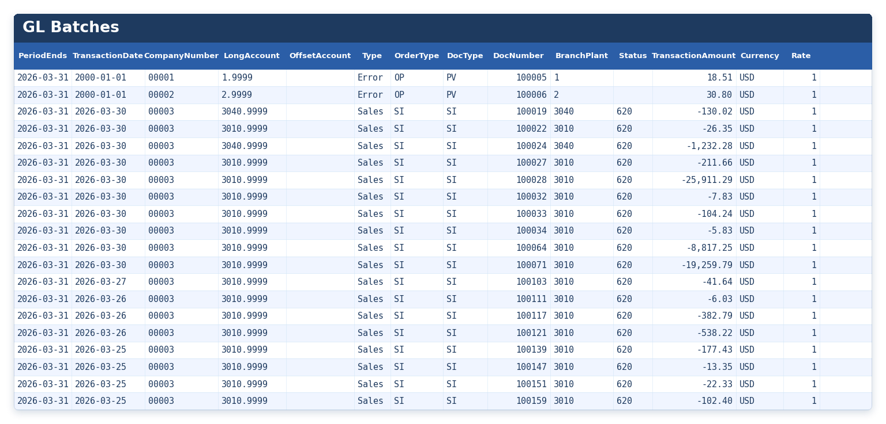
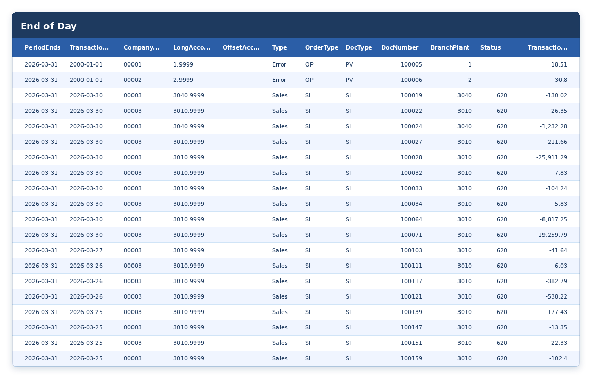

A complete training manual covering the four sources of inventory variance, the role of DMAAI tables in account assignment, period-end logic, and the GL class code hierarchy. This is the foundational reference for the Inventory module.
► Video Tutorial: Inventory Key Concepts
1. Preparing Item Data for Reconciliation
Related documents: Managing Inventory Accounts · Ultimate DMAAI Guide
§The Model DMAAI Table in JD Edwards

The Model DMAAI Table is a foundational concept in RapidReconciler. DMAAI table 4152 with document type PI has been designated as the default model table. The document type may be changed by the RR administrator in Company settings.
The Model DMAAI Table is used to:
- Determine which GL accounts are perpetual inventory accounts (business unit, object account, and subsidiary).
- Assign GL accounts to item ledger and location records during import from JD Edwards.
- Validate additional balance sheet DMAAI configurations.
Key Takeaways:
- DMAAI table 4152 is hard-coded in RapidReconciler and cannot be changed.
- Document type PI is the default; this may be changed by the RR administrator to meet specific business requirements.
- DMAAI tables 3110, 3130, 4122, 4126, 4134, 4172, 4240, and 4310 are for balance sheet perpetual accounts and should closely resemble the configuration of model table 4152.
§Vetting the Model DMAAI Table
The Model DMAAI Table must be vetted for accuracy before RapidReconciler can produce reliable results. Using the results from Inventory Integrity Report 1, verify the following:
- Each entry (by company number and GL class code) references the correct business unit, object account, and subsidiary.
- All GL class codes used for stock inventory are included in the model.
- All GL class codes used for non-stock or expense items are excluded from document type PI where possible.
Note: If document type PI contains GL class codes that are not meant to be valued but cannot be removed, it is recommended to set up a dedicated document type (e.g., I9) for RapidReconciler use. The RR administrator must update the default company configuration(s) for this change to take effect.
Key Takeaways:
- Vetting DMAAI 4152 PI is essential for accurate results in RapidReconciler.
- If document type PI does not meet business needs, establish a dedicated document type and update the Companies configuration in RapidReconciler.
- Use Integrity Report 1 shown below to validate that the new DMAAI entry is set up correctly and will be picked up by RapidReconciler:

§Managing Inventory Accounts
The Model DMAAI Table also controls which accounts appear in the RapidReconciler inventory filters. Company numbers, business units, object accounts, and subsidiaries are pulled directly from this table and populate the filter widget on the reconciliation page.
Key Takeaways:
- Inventory module filters in RapidReconciler are populated from the Model DMAAI Table.
- Account management is performed by updating the Model DMAAI Table in JD Edwards — there is no direct account entry in RapidReconciler.
§Assigning GL Account Information to Item Data
Item ledger (cardex) and item location records in JD Edwards do not contain GL account information. Each record does, however, contain the GL class code of the item being transacted. During the import process, RapidReconciler appends GL account information to each item ledger (F4111) and item location (F41021) record by using the Model DMAAI Table as a cross-reference.
The company number and GL class code of each record are matched against the model table to retrieve the associated business unit, object account, and subsidiary.
Important: These updates occur only within RapidReconciler. JD Edwards data is never modified.
This approach enables RapidReconciler to display both general ledger and perpetual inventory balances filtered by business unit, object account, and subsidiary.
Key Takeaways:
- Item ledger and location records in JDE contain GL class codes but not GL account information.
- RapidReconciler appends GL account data using the Model DMAAI Table as a cross-reference.
- GL account and perpetual inventory balances can be viewed together by business unit, object account, and subsidiary.
§Assigning Fiscal Period Information — Initial Load
Each item ledger record must be allocated to a fiscal period in order to perform a proper reconciliation. This is done in accordance with the fiscal date patterns configured in JD Edwards.
RapidReconciler employs internal date logic to determine the correct fiscal period, using the following hierarchy:
- GL Date — If a GL date exists on the item ledger record, the period is assigned using the GL date.
- Creation Date — If no GL date is populated (possible for unprocessed End of Day transactions), the period is assigned using the creation date.
Note: These rules apply to the initial data load only and account for the possibility that creation dates may have been overwritten by the Global Item Update program in JD Edwards.
§Assigning Fiscal Period Information — Post Initial Load (Cardex Accounting Methods)
Following the initial import, nightly imports use a different rule for period assignment. When a variance occurs in a prior period but is not resolved until a later period, RapidReconciler provides two options for how the variance is handled. These are called Cardex Accounting Methods.
Option 1 — Inventory Basis (Default and Recommended)
The prior-period variance remains in the period in which it occurred. The GL batch created in the resolution period offsets the original variance. The variance category in the prior period changes from "End of Day" to "Transactional Variance," and cross-period comments are added for reference. Prior period reconciliations are not altered.
Option 2 — GL Basis
The variance is assigned to the period in which the GL batch is created. This method is only recommended for organizations that can routinely resolve all variances within the same period and will not encounter timing differences. This approach can cause confusion if manual entries were made to balance a prior period.
To change the Cardex Accounting Method, submit a written request to rrsupport@getgsi.com.
§Perpetual Inventory Balance Forward
Once item ledger records have been assigned to fiscal periods, RapidReconciler calculates a Balance Forward for use as a starting point in reconciliation. This is calculated internally because JD Edwards does not provide reliable "as of" inventory data, and loading decades of historical transactions would be impractical.
The process works as follows:
- At the time of the initial production import, no inventory transactions should be in process. This ensures stable item balances can be obtained from the item location table (F41021).
- Item ledger transactions, already assigned to fiscal periods, are used to back-calculate to the first period to be reconciled.
- This balance forward serves as the starting point. Period-end perpetual balances are then calculated by summarizing item ledger transactions, reported in the RapidReconciler Valuation section.
- Any difference between this summarization and the latest inventory snapshot is reported as cardex variance in the current period only.
2. Inventory Reconciliation and Sources of Variance
§What Is Inventory Reconciliation?
There are two types of inventory reconciliation:
- Physical reconciliation — Matching physical counts to perpetual system balances (cycle counts or physical inventories).
- Accounting reconciliation — Matching calculated perpetual balances to general ledger account balances (monthly accounting process).
RapidReconciler addresses the monthly accounting reconciliation process only.
While physical accuracy is important for identifying human error, fraud, and material shortages, accurate general ledger balances are critical for financial reporting, tax calculations, and borrowing capacity.
§The Four Sources of Variance
RapidReconciler identifies and quantifies all sources of variance between the perpetual inventory system and the general ledger. If each variance source equals zero, perpetual and GL balances must be equal. Transactions must match in the same company, GL account, and fiscal period to be considered reconciled.
| # | Variance Source | Description |
|---|---|---|
| 1 | GL Batch Postings | Difference between GL detail table (F0911) and account balance table (F0902) |
| 2 | End of Day | Item ledger transactions not yet reflected in the general ledger |
| 3 | Transactional | Fully processed transactions with a mismatch between F4111 and F0911 |
| 4 | Cardex | Item ledger transaction summary does not match on-hand balance in F41021 |
3. Variance Source 1 — GL Batch Postings
§Overview
GL batch postings are the least common source of reconciliation variance. The JD Edwards toolset and on-site expertise typically handle batch postings without issue. The information below is provided for reference.
As inventory transactions are entered, GL batches are created either immediately (for receipts, issues, adjustments, and transfers) or via batch processing (for work orders and sales orders). In either case:
- Batches must be approved — either manually or through auto-approval configuration.
- Batches must be posted to update account balances in table F0902.
- Account balances must be current before reconciling.
This variance source checks the integrity between F0911 (GL detail) and F0902 (account balances) for applicable accounts.
§Common Batch Posting Errors

Use the account, GL date, approval and posting status columns on the GL Batches variance preview screen to identify any batches that have not posted successfully. Common errors include:
| Error | Description |
|---|---|
| Missing Batch Headers | A batch header record in table F0011 is absent |
| Invalid Object Account | The object account is invalid or is not a posting account |
| Invalid Business Unit | The business unit does not exist in the F0006 master table |
| Amounts Out of Balance | Debits and credits in the batch do not balance |
| Invalid GL Date | The batch is attempting to post to a closed period |
§Resolving Batch Issues
Missing Batch Headers: A missing header in table F0011 must be recreated before the batch can post. This can be done manually via the Batch Header Revisions program or using program R007021. RapidReconciler identifies these transactions with an internal status code of MH (Missing Header), visible in the Approval_Status and Posting_Status columns on the GL Batches variance preview screen.
Damaged Account Balances: If an account balance in F0902 becomes corrupted, it can be reposted using program R099102. Refer to Oracle documentation for detailed instructions.
Contact your financial department to resolve any GL batch discrepancies.
4. Variance Source 2 — End of Day Transactions
§What Is an End of Day Transaction?
An End of Day transaction is one where the general ledger is updated at a later time than the item ledger and location records. The GL update occurs during a batch process, typically scheduled to run nightly.
Two transaction types fall into the End of Day category:
| Transaction Type | Document Type | GL Update Method |
|---|---|---|
| Work Order completions and material issues | IC, IM | Manufacturing Accounting batch (R31802A) |
| Sales Order shipment confirmations | RI | Sales Update batch (R42800) |
All other transaction types (PO receipts, issues, adjustments, transfers) update the general ledger simultaneously with the item ledger.
The type column will display the appropriate batch header status message:
| Status | Description |
|---|---|
| Error | The document type is not Sales or Manufacturing. |
| Sales | The sales update program has not yet run to pick up the transaction. This is typical for transactions that occurred on the current day. |
| Manufacturing | The manufacturing accounting program has not yet run to pick up the transaction. This is typical for transactions that occurred on the current day. |

Key Takeaways:
- Item ledger and location records are always updated at the time a transaction occurs.
- For End of Day transactions, GL records are created — but not yet posted — during the nightly batch run.
- End of Day transactions impact perpetual balance valuation reports immediately.
- It is strongly recommended to ensure all End of Day transactions are fully processed before beginning reconciliation.
§Work Order Processing Reference
| Step | Action | Table Updated |
|---|---|---|
| 1 | Material issue of work order components (throughout the day) | F4111 (Item Ledger) |
| 2 | Completion of parent item (throughout the day) | F4111 (Item Ledger) |
| 3 | Manufacturing Accounting batch (R31802A) runs nightly | F0911 (GL Detail) |
§Validating End of Day Items in the JDE Item Ledger
If the validity of an item on the End of Day report is in question (e.g., status code 99 or 999), validate by locating the transaction on the JDE Item Ledger inquiry screen and reviewing the batch number in the transaction detail.
If a batch number is present, there may be a data issue in RapidReconciler. Identify the oldest transaction date and use the Cardex Deletion Tool in the Administrator section to resolve. Administrator permissions in RapidReconciler are required to access this tool.
5. Variance Source 3 — Transactional Variances
Related documents: Working with the Item Ledger · Purchase Order Reference Guide · Understanding Outside Operations
§What Are Transactional Variances?
Transactional variances represent differences between the item ledger table (F4111) and the GL detail table (F0911) for transactions that have been fully completed. RapidReconciler displays only transactions with discrepancies — it functions as an exception list.
§How Transactions Are Matched
For an item ledger record to be matched to its GL counterpart, the following seven fields must match in both tables:
- Document Number
- Document Type
- Document Company
- Line Number
- Fiscal Period
- Account Number
- Amount
Notes:
- The item ledger company number is derived from the F0006 business unit master based on the branch plant used.
- Work order document numbers differ by design between the item ledger and general ledger; these are cross-referenced from table F3106 and/or the GL subledger.
- Account number and period information is appended to item ledger data during the JDE import process.
§Transactional Variance Scenarios
| Scenario | Description | Display in RapidReconciler |
|---|---|---|
| Company Mismatch | Branch company in item ledger does not match the GL company | Treated as separate transactions; not matched |
| Account Mismatch | Assigned account in item ledger differs from the GL account | Two offsetting detail lines with different account numbers |
| Period Mismatch | Assigned fiscal period in item ledger differs from the GL period | Two offsetting detail lines with different fiscal periods |
| Amount Discrepancy | Matching criteria met, but amounts differ between F4111 and F0911 | Single line quantifying the variance |
If matching criteria are fully met with no amount discrepancy, the transaction is considered reconciled and will not appear on the report.
6. Variance Source 4 — Cardex Variance
Related documents: Handling Cardex Variance · Working with the Item Ledger · About Units of Measure · Product Costing Guide
§What Is Cardex Variance?
Cardex variance is the difference between an item's transaction amount summary (F4111) and its on-hand value (F41021). This represents a F41021-to-F4111 integrity check.
- For standard cost items, the item ledger transactional summary for each branch plant, item number, location, and lot must equal the on-hand balance in both units and amounts.
- For average cost items, the summarization level depends on the cost level assigned to the item. Cost level 2 (branch plant level) items are analyzed by branch and item, inclusive of all locations and lots.
- All item ledger quantities must be stated in the primary unit of measure.
- Item ledger records with a posting code (ILIPCD) of X are memo transactions and must be excluded from the calculation.
§How RapidReconciler Calculates Cardex Variance
- The internal balance forward for each item is used as a starting point.
- All item ledger transactions are summarized by item to determine a current transaction-based balance.
- The transaction-based balance is compared, item by item, to the current quantity on hand and value.
- Items with a variance are placed into one of two categories:
| Category | Description | Suggested Resolution |
|---|---|---|
| Quantity Variance | Summarized quantity does not equal quantity on hand | A SQL adjustment to F41021 may be required |
| Amount Variance | Quantities match, but summarized amount does not equal stated value | A dollars-only adjustment in JDE may be required |
Notes:
- Cardex variance is stated as a total amount in the current period only.
- Cardex variance is updated each refresh cycle, typically nightly.
- If the refresh cycle occurs while transactions are in process, false positives may appear.
§Validating Cardex Variance in JD Edwards
All cardex variance must be validated in JDE before making corrections. Follow these steps from the JDE Item Ledger inquiry screen:
- Inquire on the item with as much specificity as possible (item number, branch plant, and for standard cost items, location and lot).
- Note the header balances. Quantity on hand comes from F41021; value equals quantity on hand × unit cost from F4105.
- Export all detail transactions from F4111 to Excel.
- Ensure all quantities are stated in the primary unit of measure.
- Remove memo transactions (typically work order scrap IS and lot releases IZ).
- Verify that the sum of primary quantities matches the quantity on hand in the header. If not, an IT data correction to F41021 may be required.
- Verify that the sum of the extended amount column matches the value field in the header. If not, a dollars-only inventory adjustment is required.
§Item Re-Roll Feature
As of November 2023, the item re-roll feature has been updated to address invalid cardex variances and roll forward total issues. On the As-Of page, each item row includes a re-roll button in the far-right column.
Clicking the button presents three options. Review each option carefully before proceeding, as there is no undo capability. Once an option is selected and the re-roll is executed, the process typically completes in under 30 seconds. As-Of totals will update immediately; reconciliation summary totals will reflect the change at the next refresh cycle.
7. GL Class Codes
Related documents: Managing GL Class Codes · Ultimate DMAAI Guide · Zero Balance Adjustments
§Hierarchy
GL class codes are assigned to items in JDE and determine how inventory transactions are recorded in the general ledger. The mapping between GL class codes and journal entries is defined in the DMAAIs.
The GL class code hierarchy consists of four levels:
| Level | Source | Notes |
|---|---|---|
| Item Master | Assigned at item creation | Foundation of the hierarchy |
| Item Branch | Copied from Item Master | Each branch may carry a different value, though this is uncommon |
| Item Location | Copied from Item Branch | Each location may carry a different value, though this is uncommon |
| Sales/Purchase Order | Copied from Item Location | Assigned to each order line via the Additional Info form |
Important: Changes to a GL class code at any level do not cascade automatically. Each level must be updated manually.
§Changing a GL Class Code
Manual Updates Required at All Levels
When a GL class code must be changed, each of the four levels must be updated individually. This process can be time-consuming depending on the number of branch plants and locations involved.
Handling On-Hand Inventory
Any on-hand inventory must be addressed before the code is changed. Changing the code without first adjusting inventory out will leave the item's value in the original GL account, with no transaction to trigger reallocation.
The correct procedure is:
- Adjust out all on-hand quantity under the current GL class code.
- Update the GL class code at all applicable levels (Item Master, Item Branch, Item Location, and any open order lines).
- Adjust in the quantity under the new GL class code.
This ensures the system generates the appropriate journal entries to move the item's value to the correct GL account.
§Transaction Usage
Different transaction types retrieve the GL class code from different levels of the hierarchy:
| Transaction Type | GL Class Code Source |
|---|---|
| Work Orders (material issues & completions) | Item Branch level |
| Sales Orders & Purchase Orders (shipments & receipts) | Order line level |
| Inventory Transactions (issues, adjustments, transfers, cycle counts) | Item Location level |
Because different transaction types pull from different levels, it is critical that the GL class code is consistent across all levels for a given item. Inconsistencies can result in the same item posting to different GL accounts depending on the transaction type, leading to valuation and reporting errors.
§Integrity Report 5
Inventory Integrity Report 5 identifies items where the GL class code at the Item Branch level does not match the GL class code on one or more corresponding Item Location records. These values are expected to be the same.
Any item appearing on this report should be reviewed and corrected in JD Edwards as appropriate.